빠른 선택 가이드
앨범·액자에 넣을 사진이면 포켓형보다 4x6 염료승화가 맞음. 많이 뽑을수록 장당 비용 차이가 큼.
품질보다 작게 뽑아 붙이는 재미가 중요할 때. 사진 보관용이면 처음부터 제외.
2x3 스티커 크기는 유지하되 ZINK 색감이 싫을 때. 대신 소모품 수급 확인이 필수.
사진 품질보다 즉석필름 느낌, 선물성, 출력하는 과정의 재미가 중요할 때.
인스탁스 감성은 원하지만 mini 크기가 답답할 때. 장당 비용은 감수해야 함.
출력 방식 차이
전용 종이 안에 색을 내는 층이 들어 있고, 프린터가 열로 색을 발색시키는 방식입니다. 잉크나 리본 카트리지가 없습니다.
장점: 작고 가볍고 스티커형 활용이 쉬움 단점: 색 깊이와 보관성은 염료승화보다 약함노랑, 자홍, 청록 리본을 차례대로 입히고 마지막에 보호 코팅을 올리는 방식입니다. 작은 사진관 인화물에 가까운 느낌입니다.
장점: 색 안정성, 코팅감, 보관성이 좋음 단점: 본체가 커지고 전용 카트리지 수급을 봐야 함필름에 빛을 쏘아 화학적으로 현상되는 즉석필름 방식입니다. 정확한 출력보다 필름 감성과 선물성이 핵심입니다.
장점: 감성, 즉석성, 선물용 만족감이 큼 단점: 장당 비용이 높고 사진 크기가 작음잉크와 사진용지를 쓰는 일반적인 포토프린터 방식입니다. A4/A3 이상 큰 출력에 강하지만 이번 1차 표에서는 제외했습니다.
장점: 큰 사이즈와 고품질 출력에 유리 단점: 잉크 관리, 노즐 막힘, 유지비가 생김구매 판단 순서
붙일 사진이면 2x3, 앨범·액자면 4x6, 즉석필름 감성이면 instax입니다. 크기가 정해지면 후보가 절반 이상 줄어듭니다.
ZINK는 스티커 기록물, 염료승화는 사진 인화물, instax는 감성 소품에 가깝습니다. 같은 사진 프린터라도 목적이 다릅니다.
본체보다 용지·필름·카트리지를 계속 살 수 있는지가 더 중요합니다. 장당 비용과 국내 재고가 애매하면 우선순위를 낮춥니다.
색 정확도와 보관성이 중요하면 ZINK 제외, 대량 출력이면 instax 제외, 휴대성이 중요하면 CP1500 제외처럼 먼저 걸러냅니다.
장당 비용 빠른 비교
약 ₩304/장
RP-108 108매 대표가 기준. 4x6 인화 중 가장 경제적인 축.
약 ₩1,250/장
필름 감성은 좋지만 많이 뽑으면 부담이 큼.
약 ₩850~₩1,100/장
스티커처럼 쓰기 좋고 본체가 작음.
약 ₩1,300/장
작지만 염료승화라 결과물이 ZINK보다 안정적.
약 ₩650~₩760/장
Kodak Dock, Polaroid 4x6 계열 대표 예산.
제품별 상세 비교
| 비교군 | 제품 | 선택 기준 | 방식/크기 | 비용 | 사용성 | 좋은 점 | 주의 | 제품/출처 |
|---|---|---|---|---|---|---|---|---|
| 포켓 스티커형 2x3: 작게 뽑아 붙이고 기록하는 용도 | ||||||||
| 가성비 | 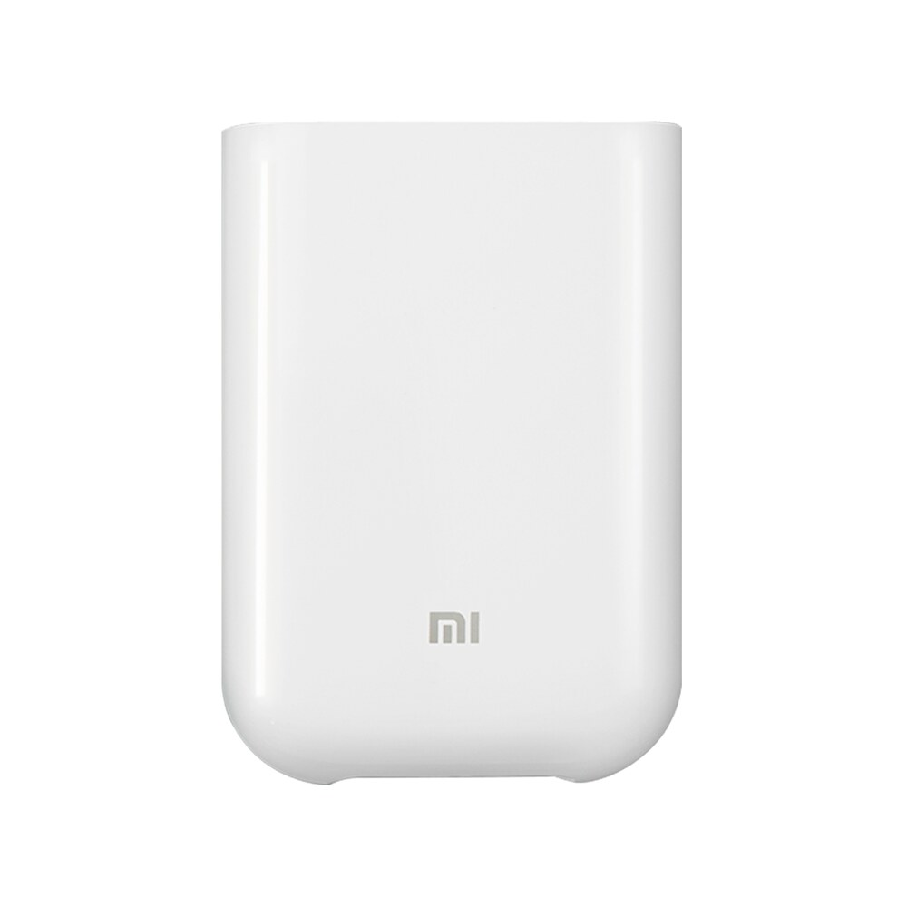 Xiaomi Mi Portable Photo Printer샤오미 Mi 포켓 포토프린터 |
고를 때최저가가 핵심이고, 작은 스티커 기록물이 목적일 때.
걸러도 됨1S와 가격 차이가 작거나 USB-C가 필요하면 굳이 이 모델을 고를 이유가 약함.
구매 전 체크Micro-USB 충전, 앱 호환, 20매/50매 종이 가격.
|
ZINK 무잉크접착식 포토페이퍼2x3in, 50x76mm |
본체 약 ₩90,00020매 약 ₩22,000약 ₩1,100/장 |
Mi Home/Xiaomi Home 앱, Bluetooth 5.0, 약 45초/장, Micro-USB 충전 | 작고 싸고, 잉크 없이 스티커처럼 붙이는 재미가 좋음. | Micro-USB 구형 포트, HEIF 미지원, 사진 품질은 기록물 쪽에 가까움. | |
| 가성비+ | 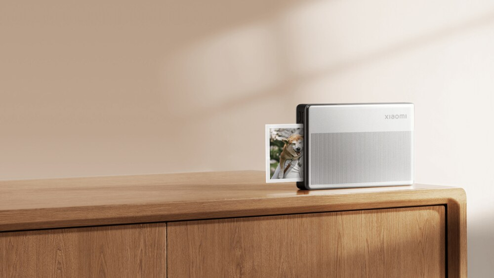 Xiaomi Portable Photo Printer 1S샤오미 포켓 포토프린터 1S |
고를 때포켓형 ZINK를 살 거라면 기본 후보. 저렴하게 자주 붙이는 용도에 맞음.
걸러도 됨색감, 피부톤, 장기 보관을 기대하면 CP1500이나 4PASS 계열이 맞음.
구매 전 체크국내 소모품 가격, 앱 설치 가능 여부, 실제 USB-C 구성.
|
ZINK 무잉크접착식 포토페이퍼2x3in, 50x76mm |
본체 약 ₩93,00020매 약 ₩22,000약 ₩1,100/장 |
Xiaomi Home 앱, Bluetooth, 약 45초/장, USB-C 계열 | USB-C라 쓰기 편하고, 기존 Mi보다 호환 포맷이 넓음. | 오래 보관할 사진 인화보다 작은 스티커 기록물 성격이 강함. | |
| 비교 후보 | 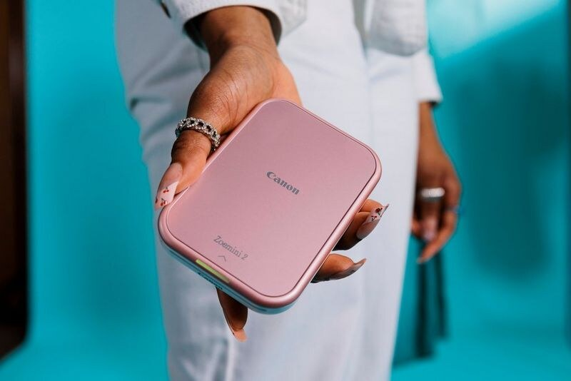 Canon Zoemini 2캐논 ZINK 포켓 프린터 |
고를 때캐논 앱과 브랜드 신뢰를 보고, 본체가 특가로 떨어졌을 때.
걸러도 됨본체가 30만원대라면 ZINK치고 너무 비싸서 우선순위가 낮음.
구매 전 체크본체 실구매가, 전용 ZINK 용지 가격, Canon Mini Print 앱 평가.
|
ZINK 무잉크접착식 포토페이퍼2x3in, 50x76mm |
본체 약 ₩326,00020매 약 ₩17,000약 ₩850/장 |
Canon Mini Print 앱, Bluetooth 5.0, 약 50초/장, USB-C 충전 | 소모품 기준 장당 비용은 낮은 편이고 앱 완성도가 좋음. | 국내 본체 가격이 높으면 ZINK 제품치고 가성비가 약함. | |
| 최선 | 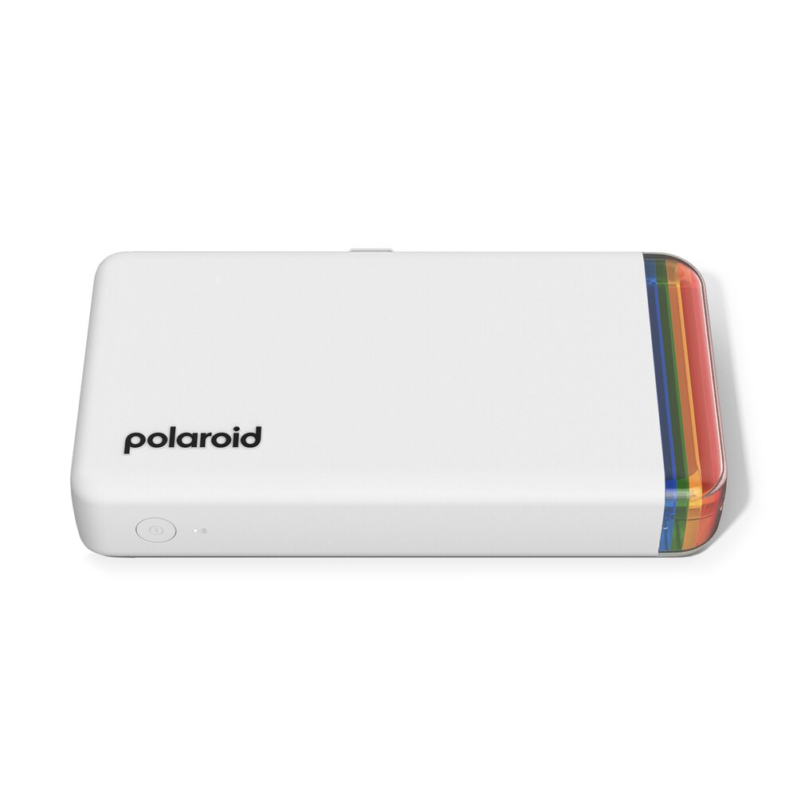 Polaroid Hi-Print 2x3 Gen 2작은 염료승화 스티커 프린터 |
고를 때2x3 스티커 크기는 원하지만 ZINK의 가벼운 색감이 싫을 때.
걸러도 됨많이 뽑을 예정이면 장당 비용이 높아 CP1500 쪽이 훨씬 합리적.
구매 전 체크2x3 전용 카트리지 국내 수급, 배송비, 장당 실비용.
|
염료승화 4PASS스티커 카트리지2.1x3.4in, 54x86mm |
본체 약 ₩168,00020매 약 ₩26,000약 ₩1,300/장 |
Polaroid Hi-Print 앱, Bluetooth, 충전식 | ZINK보다 색 안정성과 코팅감이 좋고 스티커 활용도 가능. | 장당 비용이 높고 국내 소모품 수급을 꼭 확인해야 함. | |
| 비교 후보 | 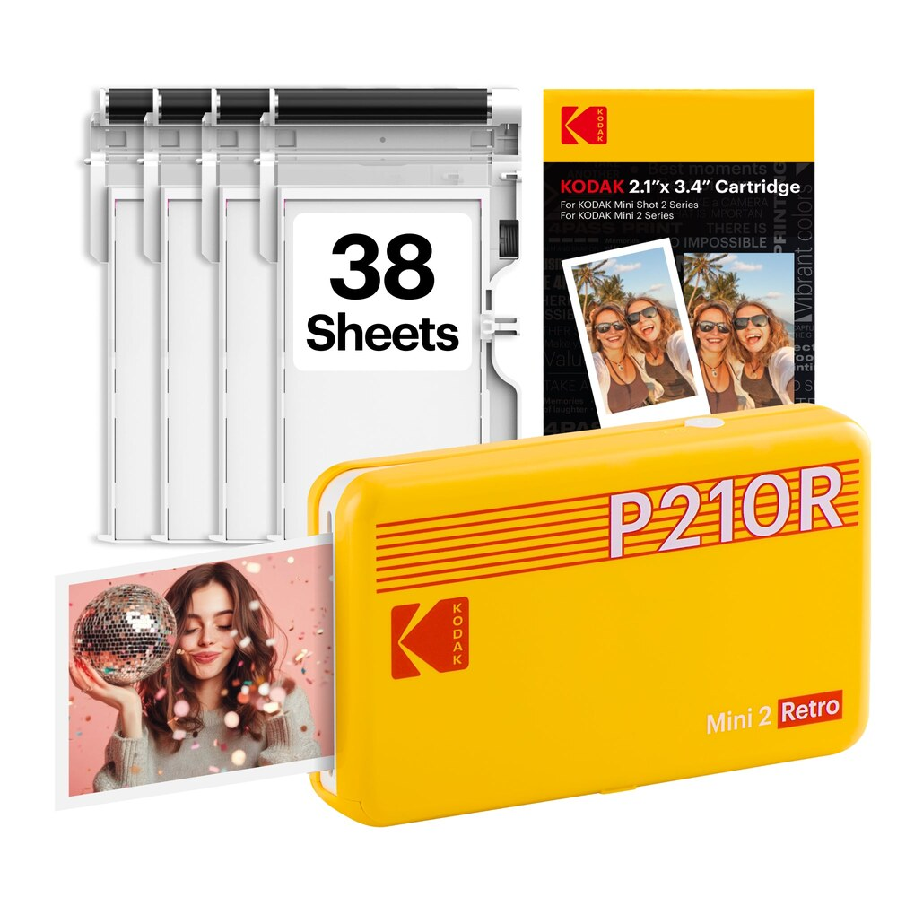 Kodak Mini 2 Retro2.1x3.4in 4PASS 포토프린터 |
고를 때작은 4PASS 출력이 필요하고 본체+카트리지 번들 가격이 좋을 때.
걸러도 됨코닥 계열은 모델별 카트리지 호환이 헷갈리면 구매 난이도가 올라감.
구매 전 체크정확한 모델명, 호환 카트리지명, 번들 매수, 국내 재구매 경로.
|
4PASS 염료승화라미네이팅 코팅2.1x3.4in |
본체 약 ₩153,00050매 세트 약 ₩45,000약 ₩900/장 |
모바일 앱, Bluetooth, 카트리지 교체식 | 물/지문에 강한 편이고 번들 구성이 자주 보임. | 코닥 포토프린터 계열은 모델별 카트리지 호환 확인이 필수. | |
| 인스탁스 필름형: 필름 감성, 선물성, 즉석 사진 느낌이 중요한 용도 | ||||||||
| 감성 최고 | 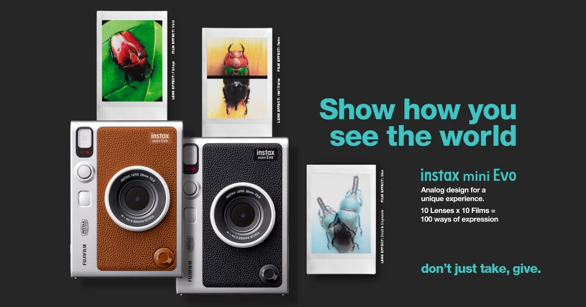 Fujifilm instax mini Evo카메라+스마트폰 프린터 |
고를 때프린터보다 즉석카메라 경험, 조작 재미, 선물성을 더 크게 볼 때.
걸러도 됨휴대폰 사진 출력만 필요하면 mini Link 3가 더 싸고 단순함.
구매 전 체크카메라 기능을 실제로 쓸지, 미니필름 비용, 충전/보관 방식.
|
instax mini 필름노광 인화필름 86x54mm, 이미지 62x46mm |
본체 약 ₩330,000미니필름 20매 약 ₩25,000약 ₩1,250/장 |
직접 촬영 또는 스마트폰 앱 전송 후 인화 | 찍고 고르고 뽑는 과정이 가장 재미있고 선물성이 큼. | 본체가 비싸고 필름비도 높음. 스마트폰 프린터만 필요하면 과함. | |
| 최선 | 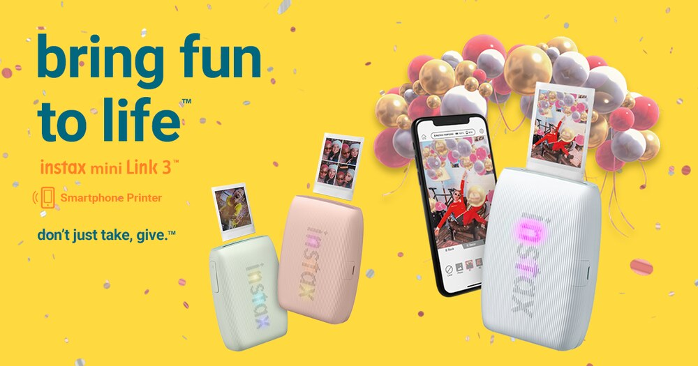 Fujifilm instax mini Link 3스마트폰 전용 인스탁스 프린터 |
고를 때휴대폰 사진을 바로 인스탁스 필름으로 뽑는 목적이 분명할 때.
걸러도 됨앨범용 사진 크기나 낮은 장당 비용이 중요하면 CP1500이 맞음.
구매 전 체크미니필름 벌크 가격, 앱 편집 기능, 사진 크기에 대한 만족도.
|
instax mini 필름노광 인화필름 86x54mm, 이미지 62x46mm |
본체 약 ₩170,000미니필름 20매 약 ₩25,000약 ₩1,250/장 |
휴대폰 사진을 앱에서 꾸민 뒤 인화 | mini Evo보다 저렴하고 스마트폰 사진 출력 흐름이 단순함. | 필름비가 높고 출력 크기가 작아 앨범용 사진으로는 아쉬움. | |
| 큰 필름 | 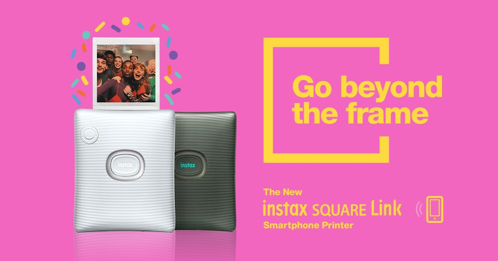 Fujifilm instax SQUARE Link정사각 인스탁스 프린터 |
고를 때미니필름이 너무 작고, 정사각 결과물의 존재감이 필요할 때.
걸러도 됨장당 비용에 민감하거나 많이 뽑을 계획이면 부담이 큼.
구매 전 체크스퀘어필름 가격, 보관 앨범 규격, 선물/전시 활용 빈도.
|
instax SQUARE 필름노광 인화필름 86x72mm, 이미지 62x62mm |
본체 약 ₩200,000스퀘어필름 20매 약 ₩34,000약 ₩1,700/장 |
휴대폰 사진을 정사각 필름으로 인화 | 미니보다 사진 면적이 넓고 정사각 구도가 선물용으로 예쁨. | 미니필름보다 장당 비용이 높아 많이 뽑는 용도에는 부담. | |
| 4x6 엽서 크기: 앨범, 액자, 가족 사진처럼 사진답게 보관하는 용도 | ||||||||
| 1순위 | 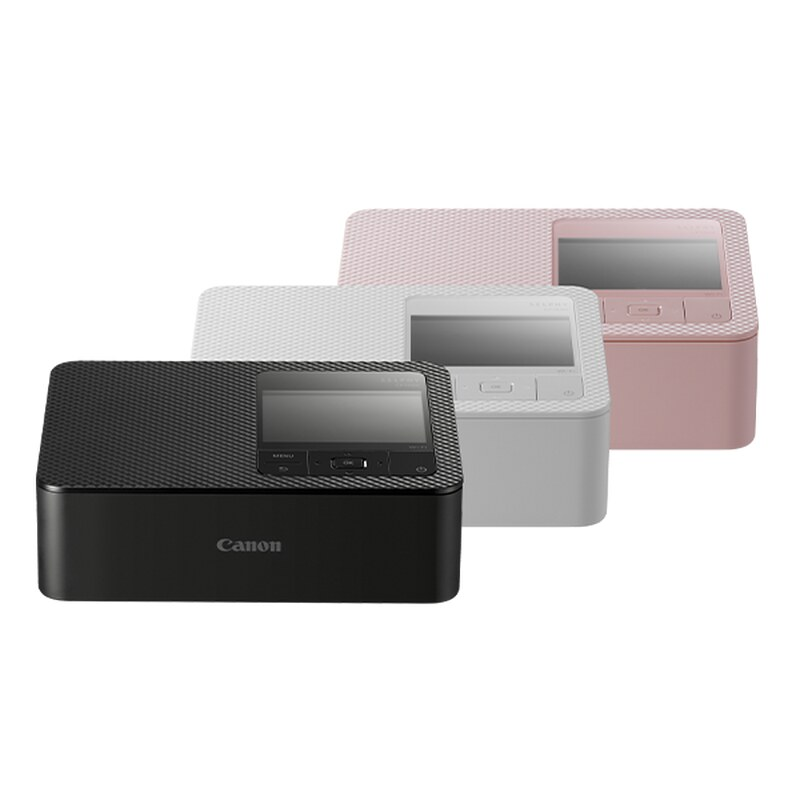 Canon SELPHY CP15004x6 염료승화 표준 |
고를 때앨범·액자에 넣을 4x6 사진을 안정적으로 많이 뽑고 싶을 때 1순위.
걸러도 됨스티커처럼 붙이는 놀이성이나 주머니에 넣는 휴대성이 목적이면 맞지 않음.
구매 전 체크RP-108 가격, 용지 규격, 집에 둘 공간, Wi-Fi/SD카드 사용 흐름.
|
염료승화 300x300dpi보호 코팅4x6in, 100x148mm |
본체 약 ₩243,000RP-108 108매 약 ₩32,850약 ₩304/장 |
Wi-Fi, USB-C, SD카드, 전용 앱 | 가족 사진, 앨범, 액자용으로 가장 자연스럽고 장당 비용이 낮음. | 포켓형은 아니고 스티커 놀이보다 사진 보관 쪽에 맞음. | |
| 비교 후보 | 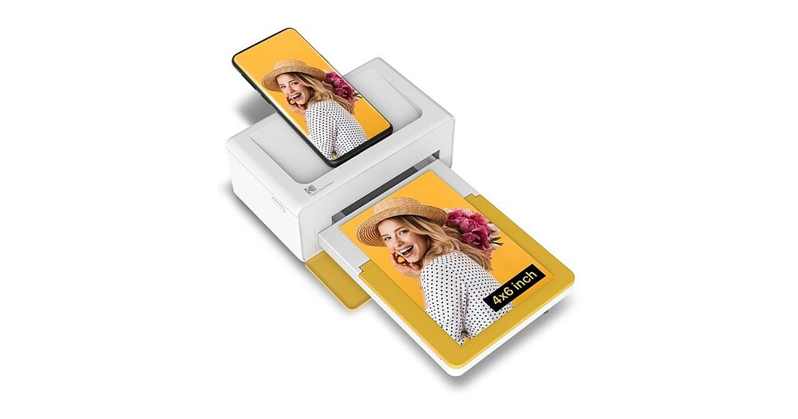 Kodak Dock Plus / Instant Dock4PASS 4x6 도크형 프린터 |
고를 때4x6은 필요하지만 캐논보다 코닥 디자인·번들·도크형 흐름이 끌릴 때.
걸러도 됨장당 비용과 소모품 안정성만 보면 CP1500보다 우선하기 어려움.
구매 전 체크정확한 카트리지 호환, 국내 소모품 재고, 앱 안정성.
|
4PASS 염료승화라미네이팅 코팅4x6in |
본체 약 ₩210,00080매 세트 약 ₩52,000약 ₩650/장 |
휴대폰 도크/앱/Bluetooth 계열 | 4PASS 코팅으로 지문과 물에 강한 편이고 4x6 결과물을 얻을 수 있음. | 국내 소모품 수급과 앱 안정성을 CP1500과 비교해야 함. | |
| 감성 대안 | 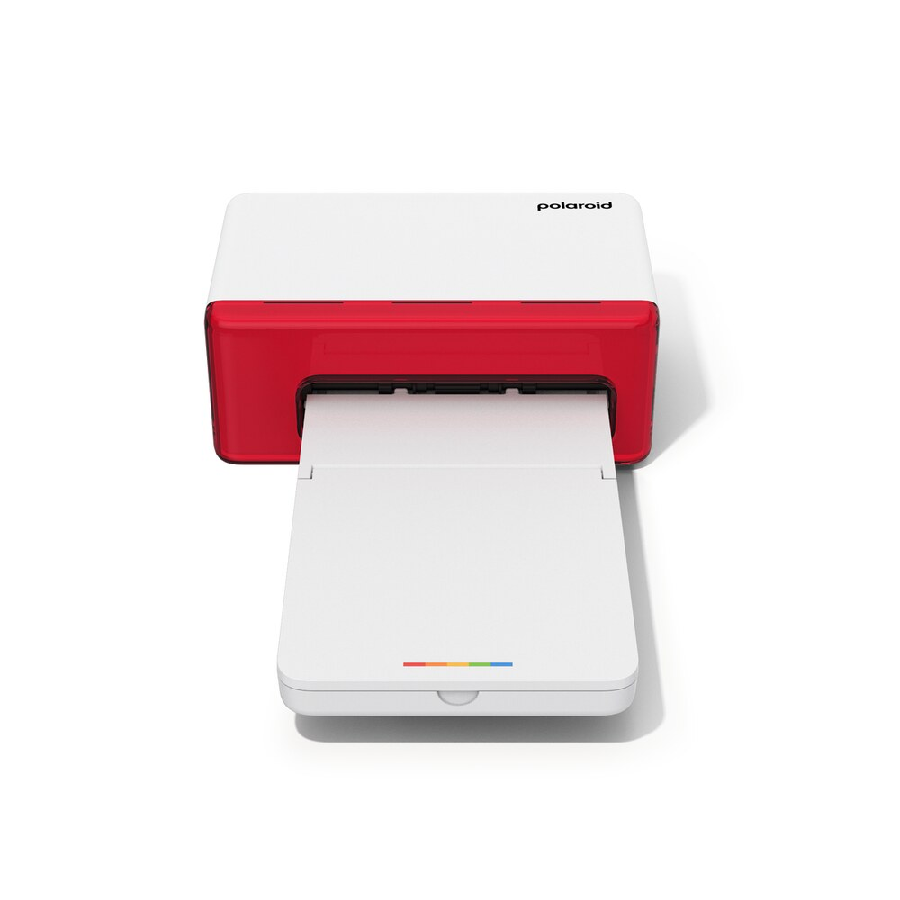 Polaroid Hi-Print 4x6폴라로이드 4x6 데스크톱 프린터 |
고를 때4x6 사진도 필요하고 폴라로이드 앱·디자인 감성이 구매 이유가 될 때.
걸러도 됨소모품을 국내에서 편하게 계속 사야 한다면 먼저 수급부터 확인해야 함.
구매 전 체크4x6 카트리지 구매처, 장당 실비용, 해외 구매 시 배송비.
|
염료승화 4PASS전원 연결형4x6in |
본체 약 ₩230,00080매 약 ₩61,000약 ₩760/장 |
Polaroid Hi-Print 앱, 전원 연결형 | 앱과 디자인 감성이 좋고 4x6 사진을 깔끔하게 뽑는 데 초점. | 국내 정식 수급이 불안하면 소모품 구입이 번거로울 수 있음. | |
구매 판단 메모
사진답게 오래 남기는 목적이면 Canon SELPHY CP1500이 가장 안전합니다. 본체는 포켓형보다 크지만 4x6 크기, 낮은 장당 비용, 안정적인 소모품 수급이 장점입니다.
작게 뽑아 붙이는 재미가 목적이면 Xiaomi Mi/1S 또는 Canon Zoemini 2 같은 ZINK 계열이 편합니다. 다만 사진 품질보다 스티커 기록물에 가깝다고 보는 편이 맞습니다.
인스탁스는 경제성보다 감성입니다. mini Evo는 카메라 경험까지 주는 제품이고, mini Link 3는 휴대폰 사진을 인스탁스 필름으로 바꾸는 제품입니다.